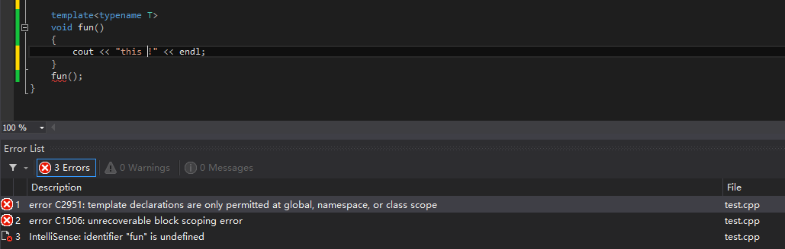
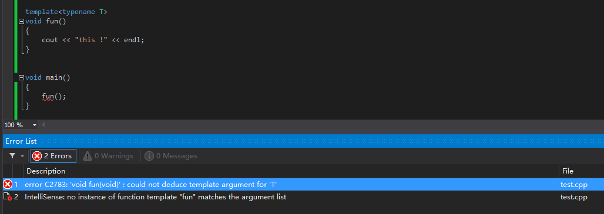
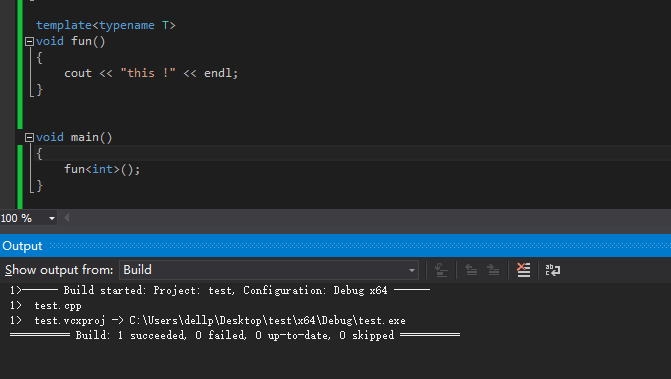
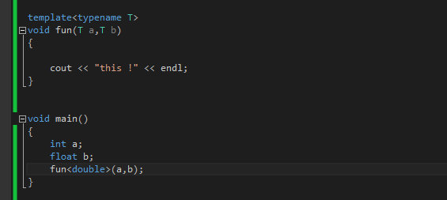
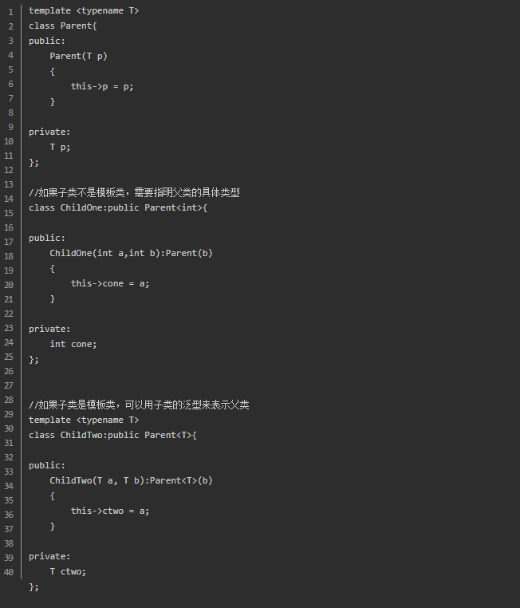

使用模板的目的是为了避免重复声明和定义一系列基本功能相同的函数或者类，其区别因传入参数的不同而产生不同类型的数据，其基本工作过程都是一致的！
（1）template declarations are only permitted at global ，namespace ，or class scope
模板声明只允许在全局、命名空间或类范围内使用！故不能在main函数中直接定义。

（2）conld not deduce template argument for T
不明确传递给fun()函数的T类型！

解决方法，可以在调用的时候加以声明。

（3）对于传入模板的参数不同的问题
模板函数的参数类型定义的是double，调用时确是int和float，实际即为类型转换问题。

（4）模板继承问题

（5）友元函数未定义问题
在编译器进行编译的时候，编译器会产生类的模板函数的声明，当时实际确认类型后调用的时候，会根据调用的类型进行再次帮我们生成对应类型的函数声明和定义。我们称之为二次编译。同样，因为这个机制，会经常报错找不到类的函数的实现。在模板类的友元函数外部定义时，也会出现这个错误。解决方法是 “ 进行类的前置声明和函数的前置声明 ”。
（6）声明和定义不在同一个文件的问题
模板的声明是在.h文件，定义是在.cpp文件，因编译时只产生声明的代码，故编译不会出错，但是当调用时会产生找不到类或者函数的问题，
解决方法：1、将模板的声明和定义放在同一个文件中
2、主函数中调用#include<.cpp>或者将.cpp文件改为.hpp文件再引用
快牵着我的袜子
参考：https://www.jianshu.com/p/70ca94872418